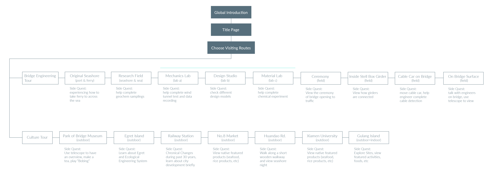

Between Worlds
Between Worlds, a mobile virtual reality app, provides people with a virtual access to museum exhibition. Enjoy your trip here!
Introduction
This app is a virtual exhibition inside a bridge-theme museum, which both increases the immersive experience as a complimentory to current physical exhibition, and provide a potential access to people who have limited access to the physical ones. As this is a self-project, I worked as UX researcher and designer for user study, affinity wall analysis, user testing, information architecture, story mapping, and interface design as well as visual elements design.
Type
Mobile APP UX Redesign (self-project)
Timeline
Sep - Dec 2017 (Refined in 2018)
My Role
Ideation, sketching, wireframing, coding, low & high-fi mockups, graphic design
OVERVIEW
The idea of creating a VR exhibition came from designing an exhibition concept for a bridge museum in my hometown. This Bridge Museum was built for memorizing the work for building Haicang Bridge (opened in Dec, 1999) connecting downtown island to other places of both the city and other cities.
Inspired by the "BRIDGE" metaphor, I designed a vr exhibition concept for people to get more easy accesses to bridge constructing process and local culture, as well as serving as a solution for nostalgia.
In my design, there are 2 "visiting routes". One is about bridge constructing process, and the other one is about local culture tour. Users could choose whatever they like to "visit". Here are some current interfaces examples (I am learning Blender to build 3D models, so hopefully it will be real 3D interface models soon).

Example mid-fidelity interface (Xi's working hard to move this project forward...).
CHALLENGE
Based on my study of this museum, there are 3 main issues.
Out-Of-Time Exhibition Style
As it was opened in 1999 without frequent updates, the overall style inside the museum together with exhibitions is a past-time one. Compared to new scientific or tech-oriented museums with advanced technology displayed, it is absolutely out of time.
Limited Exhibitions
Since the museum is about bridge history and constructions, one exhibition (main) is about Haicang Bridge constructing process, while the other one is about famous bridges in the world. From both topics and amount of exhibits, visitors have very little things to explore.

Background Knowledge
A lacking of certain background knowledge in bridge or structural engineering may lead to difficult understanding as the guidance is not properly enough inside the museum. This is an important reason that influence visitor flow.
USER RESEARCH
To help reverse the situation, I started to look into what could be improved from UX perspective and digital solutions. Not limiting myself to tech-heavy parts, I tried to discover what visitors liked to see inside a museum.
Based on my research insights, I decided to design for a bridge-related exhibition with more focus on cultural and historical aspects that visitors are familiar with and could also work as a city reflection. Platforms would be digital-based to provide more possibilities for people with limited physical accesses and help in updatings.
From user research, 5 key words are extracted out: accessibility, stories, updates, common themes and aesthetics.
Museums’ visitings are limited due to locations and time
Impressive museums usually provide good stories.
Lacking of updates in new topics and presenting technologies, or related events, may stop visitors from visiting again.
Themes favored most are history and art, the common topics as in daily life.
Aesthetics comes the top 2 options for determining if an exhibition is good.
therefore, I made my design goals as creating a product with CULTURAL REFLECTION, IMMERSIVE, AESTHETICS, EASY-TO-UNDERSTAND attributes.
BRAINSTORMING
I came up with several digital solutions through quick sketching. Some of them were digital facilities distributed on main streets in city districts. Some were purely web or mobile based products which could also be used together with iBeacon set inside museum when people visit. One idea was even about 3D holographic projection.
Chosen from these ideas, I made several prototypes and had my peers test them quickly for me.

To make my 1st-step prototype interactive, I quickly sketched 2 360 images and used one 360 photo found online with simple interactions, drew with Photoshop CS, built on A-Frame & glitch.
Free to play with this low-fi prototype (background music provided)! If you want to have a try on Cardboard, visit here
It came out that people were more interested in a VR-based experience considering the possibilities of being able to experience a "story" in that immersive context and could have more vivid experience. Besides, VR-technology could also support mobile-accessible requirement.

Immersive scene with easy-access menu.

VR glass view

Focusing on specific place will trigger "stories"
USER FLOWS
To provide options for both technical and cultural-intended people, I designed 2 "visiting routes" for users. One includes a brief process of bridge building and allows users to explore how to build the bridge through viewing and side quests. The other includes local featured sites and products.
STORYBOARDS
In creating storyboards for the process, I tried to decompose to each possible action step.

For each scenes designed in user flows, firstly I came up with a quick interface design.

conceptual sketches of users' views in "Technical Route"
To make initial demo, I picked the onboarding process and 5 scenes in both routes to design interfaces, including User Tasks, Environments, Transitions, User Action, Sound, etc.


LOW-FI PROTOTYPES
For interface elements, my initial design idea is to make them simple and more 2D style, to have the contrast with 3D "world".
For per "side quest", users may see different pop ups, and here is an example.
Let's see something closer to what I may have in final products.
Cutural Tour Site 1: Users could listen to local music pieces and view lyrics or sheets.

Cutural Tour Site 2: User can "choose" "how to cook" to see how local people cook featured foods. As food and taste are special "memory" media for local people and catalyst for travelers to learn about the city, I decided to include it inside the "tour".
Bridge Construction Tour Site 1: On cable car, users could experience how it looks like when engineers examine the cables and perform checking process, users could also "try" to help complete the checking and operate the car.
👈 More Updates May Come In the Future! Thanks for scrolling 👉